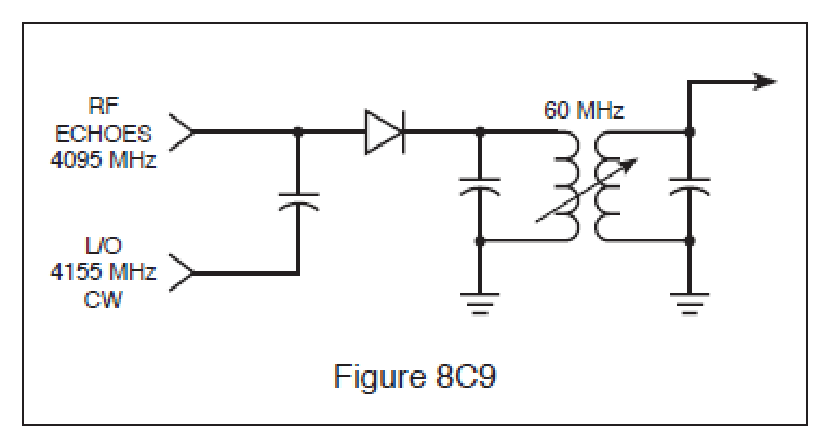
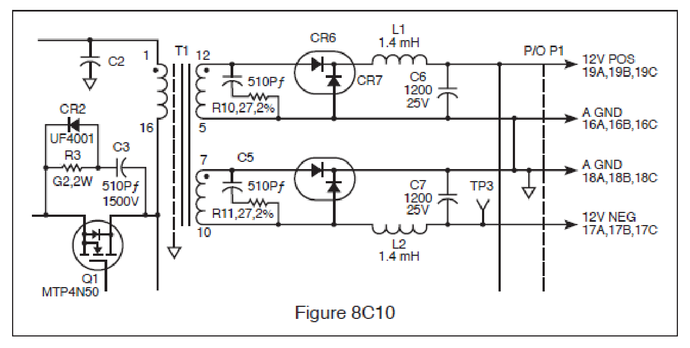
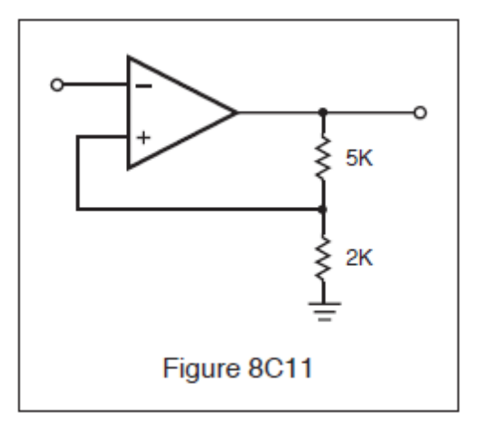

8-20C5
What component of a RADAR receiver is represented by block 49 in Fig. 8A1?

A. Discriminator.
B. IF amplifier.
C. Klystron.
D. Crystal detector (the mixer). ✓
All 60 FCC GROL questions for 8C Receiving Systems with the correct answers marked, from the official current FCC question pool. Test yourself with the free practice exam.
8-19C1
Which of the following statements is true?
A. The front end of the receiver does not provide any amplification to the RADAR signal. ✓
B. The mixer provides a gain of at least 6 db.
C. The I.F. amplifier is always a high gain, narrow bandwidth amplifier.
D. None of the above.
8-19C2
Logarithmic receivers:
A. Can’t be damaged.
B. Can’t be saturated. ✓
C. Should not be used in RADAR systems.
D. Have low sensitivity.
8-19C3
RADAR receivers are similar to:
A. FM receivers.
B. HF receivers.
C. T.V. receivers.
D. Microwave receivers. ✓
8-19C4
What section of the receiving system sends signals to the display system?
A. Video amplifier. ✓
B. Audio amplifier.
C. I.F. Amplifier.
D. Resolver.
8-19C5
What is the main difference between an analog and a digital receiver?
A. Special amplification circuitry.
B. The presence of decision circuitry to distinguish between “on” and “off” signal levels. ✓
C. An AGC stage is not required in a digital receiver.
D. Digital receivers produce no distortion.
8-19C6
In a RADAR receiver, the RF power amplifier:
A. Is high gain.
B. Is low gain.
C. Does not exist. ✓
D. Requires wide bandwidth.
8-20C1
The diagram in Fig. 8C9 shows a simplified RADAR mixer circuit using a crystal diode as the first detector. What is the output of the circuit when no echoes are being received?

A. 60 MHz CW.
B. 4095 MHz CW.
C. 4155 MHz CW.
D. No output is developed. ✓
8-20C2
In the receive mode, frequency conversion is generally accomplished by a:
A. Tunable wave-guide section.
B. Pentagrid converter.
C. Crystal diode. ✓
D. Ferrite device.
8-20C3
An RF mixer has what purpose in a RADAR system?
A. Mixes the CW transmitter output to form pulsed waves.
B. Converts a low-level signal to a different frequency. ✓
C. Prevents microwave oscillations from reaching the antenna.
D. Combines audio tones with RF to produce the RADAR signal.
8-20C4
In a RADAR unit, the mixer uses a:
A. Pentagrid converter tube.
B. Field-effect transistor.
C. Silicon crystal or PIN diode. ✓
D. Microwave transistor.
8-20C5
What component of a RADAR receiver is represented by block 49 in Fig. 8A1?
A. Discriminator.
B. IF amplifier.
C. Klystron.
D. Crystal detector (the mixer). ✓
8-20C6
In a RADAR unit, the mixer uses:
A. PIN diodes and silicon crystals. ✓
B. PIN diodes.
C. Boettcher crystals.
D. Silicon crystals.
8-21C1
The error voltage from the discriminator is applied to the:
A. Repeller (reflector) of the klystron. ✓
B. Grids of the IF amplifier.
C. Grids of the RF amplifiers.
D. Magnetron.
8-21C2
In a RADAR unit, the local oscillator is a:
A. Hydrogen Thyratron.
B. Klystron. ✓
C. Pentagrid converter tube.
D. Reactance tube modulator.
8-21C3
What component of a RADAR receiver is represented by block 48 in Fig. 8A1?
A. Klystron (local oscillator). ✓
B. Discriminator.
C. IF amplifier.
D. Crystal detector.
8-21C4
What device(s) could be used as the local oscillator in a RADAR receiver?
A. Thyratron
B. Klystron
C. Klystron and a Gunn Diode ✓
D. Gunn diode
8-21C5
The klystron local oscillator is constantly kept on frequency by:
A. Constant manual adjustments.
B. The Automatic Frequency Control circuit. ✓
C. A feedback loop from the crystal detector.
D. A feedback loop from the TR box.
8-21C6
How may the frequency of the klystron be varied?
A. Small changes can be made by adjusting the anode voltage.
B. Large changes can be made by adjusting the frequency.
C. By changing the phasing of the buncher grids
D. Small changes can be made by adjusting the repeller voltage and large changes can be made by adjusting the size of the resonant cavity. ✓
8-22C1
Overcoupling in a RADAR receiver will cause?
A. Improved target returns.
B. Increase the range of the IAGC.
C. Decrease noise.
D. Oscillations. ✓
8-22C2
The usual intermediate frequency of a shipboard RADAR unit is:
A. 455 kHz.
B. 10.7 MHz.
C. 30 or 60 MHz. ✓
D. 120 MHz.
8-22C3
The I.F. Amplifier bandwidth is:
A. Wide for short ranges and narrow for long ranges. ✓
B. Wide for long ranges and narrow for short ranges.
C. Constant for all ranges.
D. Adjustable from the control panel.
8-22C4
A logarithmic IF amplifier is preferable to a linear IF amplifier in a RADAR receiver because it:
A. Has higher gain.
B. Is more easily aligned.
C. Has a lower noise figure.
D. Has a greater dynamic range. ✓
8-22C5
The high-gain IF amplifiers in a RADAR receiver may amplify a 2 microvolt input signal to an output level of 2 volts. This amount of amplification represents a gain of:
A. 60 db.
B. 100 db.
C. 120 db. ✓
D. 1,000 db.
8-22C6
In a RADAR receiver AGC and IAGC can vary between:
A. 10 and 15 db.
B. 20 and 40 db. ✓
C. 30 and 60 db.
D. 5 and 30 db.
8-23C1
Which of the following statements is correct?
A. The video amplifier is located between the mixer and the I.F. amplifier.
B. The video amplifier operates between 60 MHz and 120 Mhz.
C. The video amplifier is located between the I.F. amplifier and the display system. ✓
D. The video amplifier is located between the local oscillator and the mixer.
8-23C2
Video amplifiers in pulse RADAR receivers must have a broad bandwidth because:
A. Weak pulses must be amplified. ✓
B. High frequency sine waves must be amplified.
C. The RADARs operate at PRFs above 100.
D. The pulses produced are normally too wide for video amplification.
8-23C3
In video amplifiers, compensation for the input and output stage capacitances must be accomplished to prevent distorting the video pulses. This compensation is normally accomplished by connecting:
A. Inductors in parallel with both the input and output capacitances.
B. Resistances in parallel with both the input and output capacitances.
C. An inductor in parallel with the input capacitance and an inductor in series with the output capacitance.
D. An inductor in series with the input capacitance and an inductor in parallel with the output capacitance. ✓
8-23C4
Which of the following signals is not usually an input to the video amplifier?
A. Resolver. ✓
B. Range.
C. Brilliance.
D. Contrast.
8-23C5
Which of the following signals are usually an input to the video amplifier?
A. Range.
B. Brilliance.
C. Contrast.
D. All of the above. ✓
8-23C6
The video (second) detector in a pulse modulated RADAR system would most likely use a/an:
A. Discriminator detector.
B. Diode detector. ✓
C. Ratio detector.
D. Infinite impedance detector.
8-24C1
The AFC system is used to:
A. Control the frequency of the magnetron.
B. Control the frequency of the klystron. ✓
C. Control the receiver gain.
D. Control the frequency of the incoming pulses.
8-24C2
A circuit used to develop AFC voltage in a RADAR receiver is called the:
A. Peak detector.
B. Crystal mixer.
C. Second detector.
D. Discriminator. ✓
8-24C3
In the AFC system, the discriminator compares the frequencies of the:
A. Magnetron and klystron. ✓
B. PRR generator and magnetron.
C. Magnetron and crystal detector.
D. Magnetron and video amplifier.
8-24C4
An AFC system keeps the receiver tuned to the transmitted signal by varying the frequency of the:
A. Magnetron.
B. IF amplifier stage.
C. Local oscillator. ✓
D. Cavity duplexer.
8-24C5
A RADAR transmitter is operating on 3.0 GHz and the reflex klystron local oscillator, operating at 3.060 GHz, develops a 60 MHz IF. If the magnetron drifts higher in frequency, the AFC system must cause the klystron repeller plate to become:
A. More positive.
B. More negative. ✓
C. Less positive.
D. Less negative.
8-24C6
What component is block 50 in Fig. 8A1?
A. IF amplifier.
B. AFC amplifier.
C. Discriminator. ✓
D. Crystal detector.
8-25C1
The STC circuit is used to:
A. Increase receiver stability.
B. Increase receiver sensitivity.
C. Increase receiver selectivity.
D. Decrease sea return on a RADAR receiver. ✓
8-25C2
The STC circuit:
A. Increases the sensitivity of the receiver for close targets.
B. Decreases sea return on the PPI scope. ✓
C. Helps to increase the bearing resolution of targets.
D. Increases sea return on the PPI scope.
8-25C3
Sea return is:
A. Sea water that gets into the antenna system.
B. The return echo from a target at sea.
C. The reflection of RADAR signals from nearby waves. ✓
D. None of the above.
8-25C4
Sea clutter on the RADAR scope cannot be effectively reduced using front panel controls. What circuit would you suspect is faulty?
A. Sensitivity Time Control (STC) circuit. ✓
B. False Target Eliminator (FTE) circuit.
C. Fast Time Constant (FTC) circuit.
D. Intermediate Frequency (IF) circuit.
8-25C5
What circuit controls the suppression of sea clutter?
A. EBL circuit.
B. STC circuit. ✓
C. Local oscillator.
D. Audio amplifier.
8-25C6
The sensitivity time control (STC) circuit:
A. Decreases the sensitivity of the receiver for close objects. ✓
B. Increases the sensitivity of the receiver for close objects.
C. Increases the sensitivity of the receiver for distant objects.
D. Decreases the sensitivity of the transmitter for close objects.
8-26C1
Prior to making “power-on” measurements on a switching power supply, you should be familiar with the supply because of the following:
A. You need to know where the filter capacitors are so they can be discharged.
B. If it does not use a line isolation transformer you may destroy the supply with grounded test equipment. ✓
C. It is not possible to cause a component failure by using ungrounded test equipment.
D. So that measurements can be made without referring to the schematic.
8-26C2
A constant frequency switching power supply regulator with an input voltage of 165 volts DC, and a switching frequency of 20 kHz, has an “ON” time of 27 microseconds when supplying 1 ampere to its load. What is the output voltage across the load?
A. It cannot be determined with the information given.
B. 305.55 volts DC.
C. 89.1 volts DC. ✓
D. 165 volts DC.
8-26C3
The circuit shown in Fig. 8C10 is the output of a switching power supply. Measuring from the junction of CR6, CR7 and L1 to ground with an oscilloscope, what waveform would you expect to see?

A. Filtered DC.
B. Pulsating DC at line frequency.
C. AC at line frequency.
D. Pulsating DC much higher than line frequency. ✓
8-26C4
With regard to the comparator shown in Fig. 8C11, the input is a sinusoid. Nominal high level output of the comparator is 4.5 volts. Choose the most correct statement regarding the input and output.

A. The leading edge of the output waveform occurs 180 degrees after positive zero crossing of the input waveform. ✓
B. The rising edge of the output waveform trails the positive zero crossing of the input waveform by 45 degrees.
C. The rising edge of the output waveform trails the negative zero crossing of the input waveform by 45 degrees.
D. The rising edge of the output waveform trails the positive peak of the input waveform by 45 degrees.
8-26C5
When monitoring the gate voltage of a power MOSFET in the switching power supply of a modern RADAR, you would expect to see the gate voltage change from “low” to “high” by how much?
A. 1 volt to 2 volts.
B. 300 microvolts to 700 microvolts.
C. Greater than 2 volts. ✓
D. 1.0 volt to 20.0 volts.
8-26C6
The nominal output high of the comparator shown in Fig. 8C11 is 4.5 volts. Choose the most correct statement which describes the trip points.
A. Upper trip point is 4.5 volts. Lower trip point is approximately 0 volts.
B. Upper trip point is 2.5 volts. Lower trip point is approximately 2.0 volts.
C. Upper trip point is 900 microvolts. Lower trip point is approximately 0 volts.
D. Upper trip point is +1.285 volts. Lower trip point is -1.285 volts. ✓
8-27C1
One of the best methods of reducing noise in a RADAR receiver is?
A. Changing the frequency.
B. Isolation. ✓
C. Replacing the resonant cavity.
D. Changing the IF strip.
8-27C2
The primary cause of noise in a RADAR receiver can be attributed to:
A. Electrical causes.
B. Atmospheric changes.
C. Poor grounding.
D. Thermal noise caused by RADAR receiver components. ✓
8-27C3
Noise can appear on the LCD as:
A. Erratic video and sharp changes in intensity. ✓
B. Black spots on the screen.
C. Changes in bearings.
D. None of the above.
8-27C4
RADAR interference on a communications receiver appears as:
A. A varying tone.
B. Static.
C. A hissing tone.
D. A steady tone. ✓
8-27C5
In a RADAR receiver the most common types of interference are?
A. Weather and sea return. ✓
B. Sea return and thermal.
C. Weather and electrical.
D. Jamming and electrical.
8-27C6
Noise can:
A. Mask larger targets.
B. Change bearings.
C. Mask small targets. ✓
D. Increase RADAR transmitter interference.
8-28C1
The purpose of the discriminator circuit in a RADAR set is to:
A. Discriminate against nearby objects.
B. Discriminate against two objects with very similar bearings.
C. Generate a corrective voltage for controlling the frequency of the klystron local oscillator. ✓
D. Demodulate or remove the intelligence from the FM signal.
8-28C2
The MTI circuit:
A. Acts as a mixer in a RADAR receiver.
B. Is a filter, which blocks out stationary targets, allowing only moving targets to be detected. ✓
C. Is used to monitor transmitter interference.
D. Will pick up targets, which are not in motion.
8-28C3
Where is a RF attenuator used in a RADAR unit?
A. Between the antenna and the receiver.
B. Between the magnetron and the antenna.
C. Between the magnetron and the AFC section of the receiver. ✓
D. Between the AFC section and the klystron.
8-28C4
The condition known as “glint” refers to a shifting of clutter with each RADAR pulse and can be caused by a:
A. Improperly functioning MTI filter. ✓
B. Memory failure.
C. Low AFC voltage.
D. Interference from electrical equipment.
8-28C5
An ion discharge (TR) cell is used to:
A. Protect the transmitter from high SWRs.
B. Lower the noise figure of the receiver.
C. Tune the local oscillator of the RADAR receiver.
D. Protect the receiver mixer during the transmit pulse. ✓
8-28C6
When the receiver employs an MTI circuit:
A. The receiver gain increases with time.
B. Only moving targets will be displayed. ✓
C. The receiver AGC circuits are disabled.
D. Ground clutter will be free of “rabbits.”